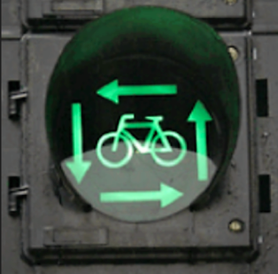

►
Vierkant Groen
Bij vierkant groen krijgen alle fietsers en/of voetgangers tegelijk groen licht, terwijl het gemotoriseerd verkeer rood licht heeft.
Als u dit licht ziet, dan wordt u verteld dat ook andere fietsers en voetgangers op hetzelfde moment groen kunnen hebben. Het is dan niet verboden om als linksafslaande fietser schuin over te steken, maar het is waarschijnlijk veiliger om gewoon L-vormig rond het kruispunt te fietsen via de fietspaden. Wel voorrang geven van rechts, uiteraard.